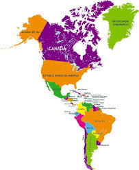

>
Practica Tablas
Continentes
America
Europa
Asia
Africa
Oceania
Antartida
Canada
Belice
Venezuela
Nicaragua
Chile
Bulgaria
Dinamarca
Noruega
Ucrania
Irlanda
Filipinas
Armena
Birmania
Malasia
Vietnam
Ghana
Angola
Zimbabue
Uganda
Kenia
Fiyi
Nauru
Tonga
Nueva Zelanda
Antartida Argentina
La Dependencia Ross
Tierra Adelia
